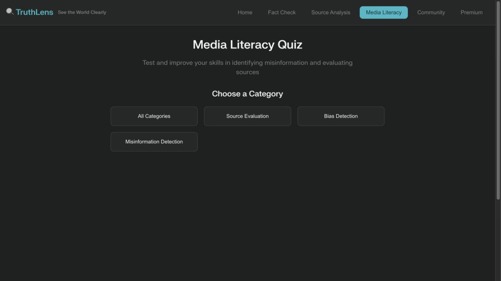

TruthLens
A media-literacy prototype with sample fact-checking flows, source evaluation, and an interactive quiz.
- Development focus
- Frontend interaction development
- Technology
- HTML · CSS · JavaScript
- Source last updated

The problem
Readers need practice evaluating claims and sources, alongside understandable feedback that supports critical thinking.
The approach
The interface separates fact checks, source analysis, media-literacy quizzes, and community examples. Client-side sample data drives the demonstration.
The challenge
Make an educational verification flow easy to explore without presenting example verdicts or confidence scores as independently verified analysis.
Document the implementation as a sample-data prototype. Use the interactive quiz as the clearest demonstration of the working educational experience.
What the project demonstrates
A browser-based demonstration lets visitors explore a media-literacy quiz and example claim and source-analysis interactions.
- The public JavaScript includes quiz questions, answers, and explanations.
- Navigation switches between the application’s main sections.
- Fact-checking and source-analysis examples are supplied through client-side sample data.
Explore the published interface and public implementation.
Scope & limitations
The public demo uses sample data. Its marketing figures, confidence scores, user counts, and accuracy claims are not validated evidence of this project’s impact. No production AI verification service is established.
Next steps
Replace demonstration claims with sourced evidence, validate the learning material, and test quiz usability with readers.
Case study reviewed 3 November 2026. Source dates refer to the most recent recorded changes, rather than project start or completion dates.